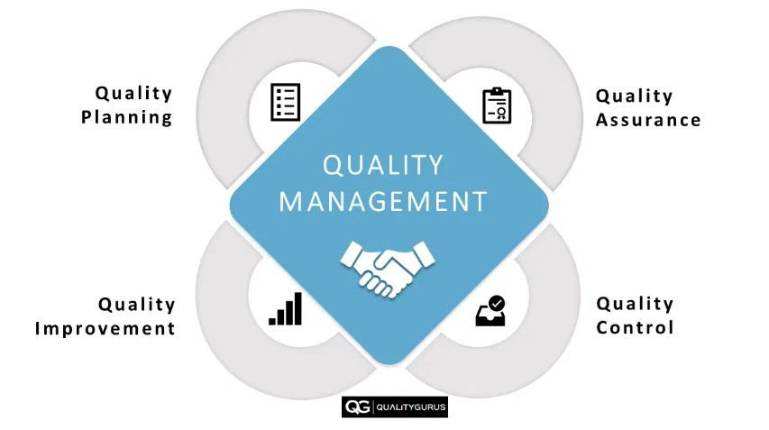
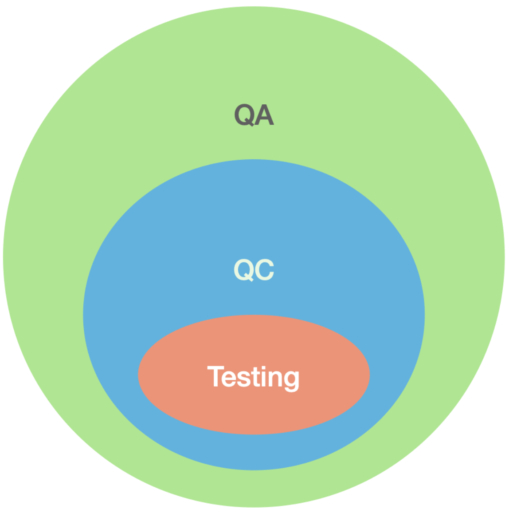
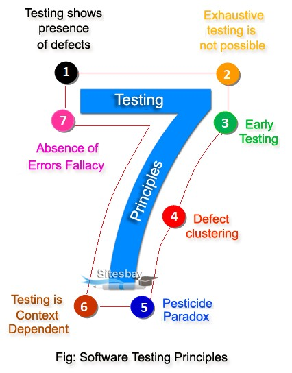

Управление качеством (quality management, QM) - скоординированные действия по организации и контролю компании в отношении качества:

Обеспечение качества (quality assurance, QA) - набор мероприятий, проводимых в процессе разработки продукта для обеспечения уверенности в качестве:

Контроль качества (quality control, QC) - набор мероприятий, проводимых в процессе разработки продукта, для постоянного получения информации о:
Тестирование (testing) - одна из техник контроля качества ПО, включающая в себя динамические и статические активности, касающиеся всех этапов SDLC и результатов, получаемых на этих этапах, с целью:
Верификация ПО - проверка ПО на соответствие требованиям (желательно - задокументированным).
Валидация ПО - оценка ПО на соответствие ожиданиям, нуждам, целям пользователей/заказчиков.
К началу
Тестирование подтверждает, что баги есть, но не доказывает, что их нет.
Нельзя проверить все комбинации входных данных и все пути выполнения кода.
Тестовые активности должны начинаться на самых первых этапах жизненного цикла разработки (SDLC). Этот подход называют Shift-left testing.
80% всех багов обычно сосредоточены всего в 20% функций (модулей) системы.
Если прогонять одни и те же тест-кейсы многократно, они перестают находить новые баги.
Универсального способа тестирования не существует. Подход всегда должен адаптироваться под конкретные условия.
Исправление всех найденных багов еще не гарантирует, что продукт будет успешным и качественным.